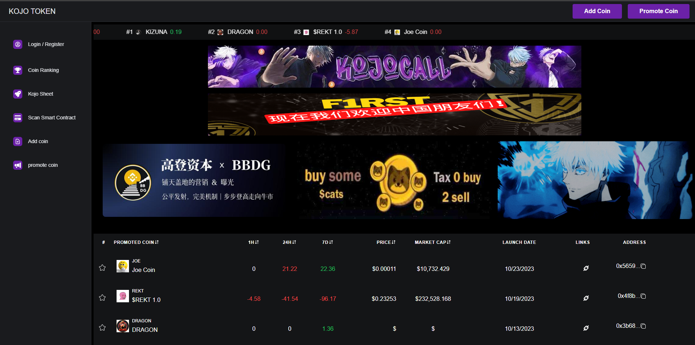

A Platform for Token Insights and Rankings Promotion
The KOJO Token Dashboard is a feature-rich web application designed for cryptocurrency enthusiasts and investors. It provides real-time token rankings, market analytics, and smart contract scanning. Users can explore trending coins, view detailed performance data, and even promote their own projects.
Featuring a sleek user interface, the platform ensures intuitive navigation and an immersive experience. This project showcases advanced front-end development, responsive design, and seamless integration with blockchain APIs.